地政学
ブラジリアは国家統合のため内陸へ置かれた首都です。沿岸大都市から距離を取り、連邦政府、議会、最高裁、大使館、軍、抗議の場を高原に集め、ブラジルの地域バランスと統治の象徴です。地方政治もここへ届きます。
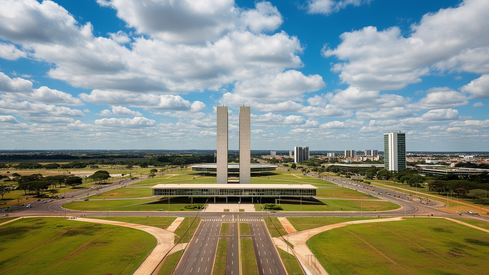
🇧🇷 ブラジル / 連邦直轄区 / World City Atlas
内陸高原に建設された計画首都。三権広場、官庁軸、モダニズム建築、人工湖、セラード、衛星都市、長い通勤、宗教空間、政治的抗議が同じ都市圏を形作ります。
都市の骨格
ブラジリアは、政治権力を海岸部から内陸へ移す国家事業として作られました。壮大な軸線と記念碑的建築の外側では、衛星都市、通勤、住宅費、水不足、日常商業が首都の実際の姿を支えています。
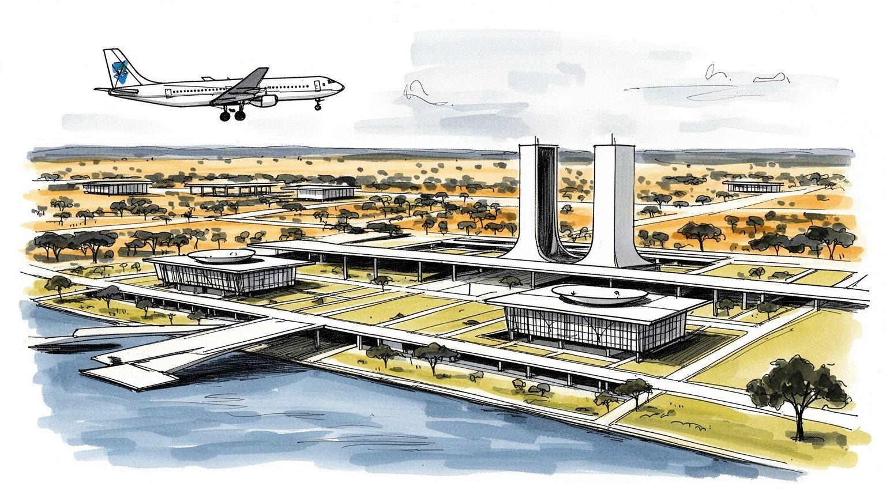
ブラジリアは国家統合のため内陸へ置かれた首都です。沿岸大都市から距離を取り、連邦政府、議会、最高裁、大使館、軍、抗議の場を高原に集め、ブラジルの地域バランスと統治の象徴です。地方政治もここへ届きます。
雇用の中心は連邦行政、建設、金融、教育、医療、法律、警備、清掃、輸送、飲食です。公務員所得が厚い一方、衛星都市から通うサービス労働が都市を支え、賃金差と移動時間が生活を分けます。若者の職探しも課題です。
モダニズム建築の都市像に、カトリック、福音派、アフロ系信仰、心霊主義、先住民表象、移住者の祭りが重なります。大聖堂や広場だけでなく、周縁の教会と家族行事が首都の時間を刻みます。祈りは日常の支えです。
旅行者は三権広場、議会、大聖堂、湖、ニーマイヤーの曲線を巡ります。住民には乾季の水、長距離通勤、車依存、治安、住宅費、暑さ、公共空間の少なさが日々の課題としてあります。旅は生活圏も読む深い入口です。
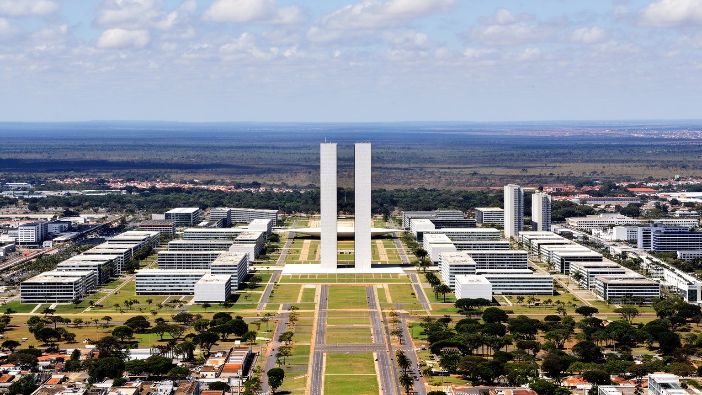
ブラジリアの出発点は、首都を海岸のリオデジャネイロから内陸高原へ移すという国家的な決断である。ブラジルは広大な国土を持ちながら、政治と人口と輸出港が長く大西洋岸へ偏っていた。新首都は内陸開発を進め、地域統合を象徴し、植民地以来の沿岸中心主義から距離を取るために構想された。ルシオ・コスタの都市計画とオスカー・ニーマイヤーの建築は、広い軸線、記念碑的な広場、明確な機能分離、車を前提にした道路で国家の未来像を描いた。短期間の建設には全国から労働者が集まり、カンダンゴと呼ばれた建設労働者の働きが都市を実体化した。しかし完成した首都の象徴性は、彼らの住まいと生活を十分に包み込んだわけではない。計画図の美しさの外側に、労働者の集落、臨時住宅、後の衛星都市が広がった。ブラジリアを読むには、未来志向の首都という表情と、建設を担った人々の不安定な生活を同時に見る必要がある。都市は理想の線で生まれたが、その線を日々使うのは政府職員だけではなく、清掃、警備、食堂、建設、交通、家庭労働を担う人々である。首都移転は地図上の中心を変えただけでなく、国家が誰を中心に見て、誰を周縁へ置くのかを示す出来事でもあった。開都から時間がたつほど、記念碑の物語と住民の住宅要求、交通要求、環境保護は一体の課題として戻ってくる。
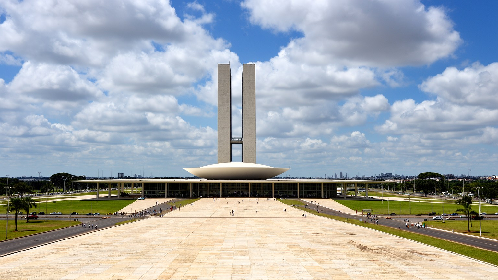
ブラジリアの中心には、行政、立法、司法を可視化する都市空間が置かれている。三権広場、大統領府、国会議事堂、最高裁判所、省庁街、大使館地区は、制度が建物と広場として並ぶ場所である。ここでは政治は抽象的なニュースではなく、道路封鎖、警備、式典、抗議、記者会見、官庁の昼食、議員秘書の移動として都市に現れる。首都が計画都市であるため、権力の舞台は読みやすい一方、日常生活から切り離されても見える。広い芝生と軸線は国家の開放性を演出するが、歩く距離は長く、日陰は少なく、抗議や集会の使われ方は時代ごとに緊張を帯びる。ブラジルの政治は地域、階級、人種、宗教、農地、環境、軍、司法、汚職問題が複雑に絡むため、ブラジリアの広場はしばしば国全体の対立が集まる舞台になる。大使館や国際機関もこの高原都市に置かれ、アマゾン、農業、気候、南米外交、先住民の権利をめぐる交渉が進む。ブラジリアを政治都市として読むには、モニュメントの整然さだけでなく、地方から来るデモ隊、報道陣、警備員、清掃員、食堂で働く人、官庁へ通う周縁住民の動きを見る必要がある。制度は建物に宿るだけでなく、広場を使う人の緊張と期待によって毎日試されている。全国の争点がここに集まるほど、首都の道路や芝生は単なる景観ではなく、民主主義の状態を映す公共の舞台になる。
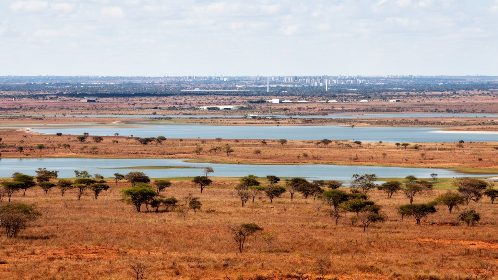
ブラジリアは熱帯雨林の都市ではなく、セラードと呼ばれるサバナ性の高原にある。乾季には空が澄み、湿度が下がり、赤い土と草原の色が強くなり、雨季には短時間の激しい雨が道路と排水を試す。標高の高さは暑さを和らげるが、乾燥、山火事、貯水池の水位、都市の緑地管理は常に生活へ影響する。パラノア湖は景観と余暇の象徴であると同時に、水管理、排水、住宅開発、富裕層の湖岸利用、公共アクセスをめぐる政治的な空間でもある。セラードは単なる空き地ではなく、ブラジルの水循環と生物多様性を支える重要な生態系であり、農業開発や都市拡大によって強い圧力を受けてきた。首都の建設は自然の中に未来都市を置く物語として語られやすいが、その背後には水源保護、土壌、火災、下水処理、住宅地の拡大、道路建設の問題がある。乾季の粉じん、日差し、日陰の不足は、バス停で待つ人や屋外で働く人に重い。ブラジリアを環境から読むには、湖畔の美しい眺めだけでなく、貯水池、保護区、排水路、山火事の煙、乾季の喉の痛み、雨季の冠水を同じ都市条件として見る必要がある。高原の気候は首都の景観を作るが、生活の公平性も左右している。水不足が起きれば、庭や湖岸の余暇より先に、周縁の住宅、学校、病院、清掃の現場に負担が現れる。自然環境は首都の背景ではなく、行政の判断を毎日試す基盤である。
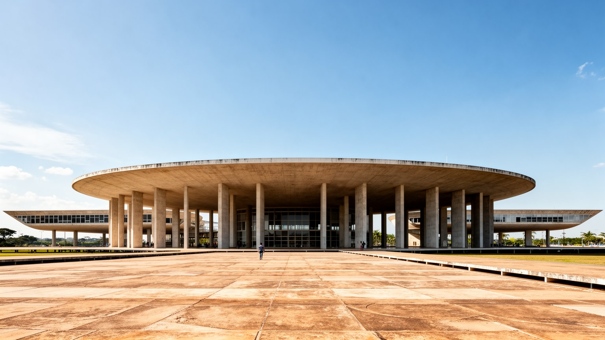
ブラジリアの建築は、世界のモダニズム都市計画を語るうえで避けられない。国会の双塔と皿状の議場、大聖堂の骨組みのような構造、イタマラチ宮、アルボラーダ宮、プラナルト宮、国立劇場、住宅スーパーブロックは、白いコンクリート、曲線、水面、広場、空の大きさを組み合わせて国家の新しさを表現した。建物は単体の美しさだけでなく、軸線と距離の中で見られるよう設計されている。車で走ると印象的なスケールが生まれる一方、歩行者には長すぎる距離と日陰の少なさが残る。モダニズムは衛生的で合理的な未来を目指したが、複雑な商店街、偶然の路地、小さな店、ゆっくり歩く生活を十分には想定しなかった。スーパーブロックには学校、緑地、生活施設を近くに置く理想があったものの、所得差や自動車依存は計画の均質さを崩していった。観光客にとってブラジリアは建築を巡る都市だが、住民にとって建築は通勤、買い物、日差し、バス停、維持費、公共空間の使いやすさとして経験される。世界遺産として評価される景観を守ることと、都市を住みやすく更新することは時に衝突する。ブラジリアの建築を読むとは、写真になる曲線だけでなく、その足元で誰が休み、働き、遠回りし、どこに店を置けるのかを読むことである。保存されるべき形と、毎日の利用に必要な影、店、座る場所、交通の改善をどう両立させるかが、建築都市の現在の課題である。
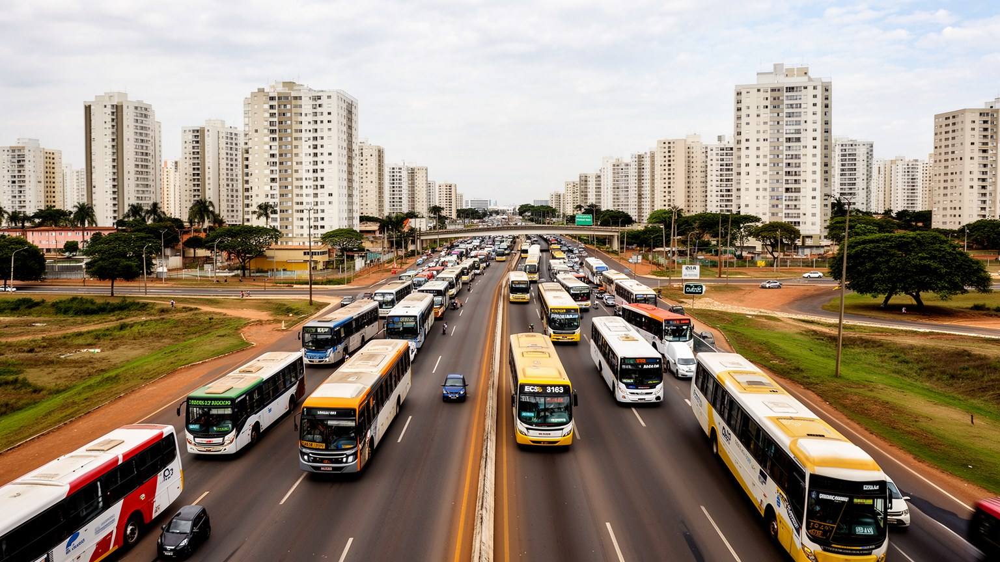
ブラジリアの実際の生活圏は、記念碑的なプラーノ・ピロトだけでは完結しない。タグアチンガ、セイランジア、サマンバイア、ガマ、ソブラジーニョ、プラナルチナ、アグアス・クララスなどの行政地域と周辺のゴイアス州側の自治体が、住宅、商業、労働力、学校、家族の生活を担っている。中心部に政府機関と高所得の雇用が集中する一方、多くの労働者は衛星都市から長い時間をかけて通う。バス、地下鉄、自家用車、幹線道路の混雑は、都市の階層構造を毎朝見せる。計画首都の理想は、機能を整理した美しい中心を作ったが、急速な人口増加と住宅需要は周縁に広がり、中心と周縁の距離を社会的な差へ変えた。衛星都市は単なる寝床ではない。市場、学校、教会、音楽、屋台、サッカー、家族経営の店、移住者の記憶があり、ブラジリアの文化と日常の厚みを作っている。中心だけを見れば都市は整然として見えるが、通勤の疲れ、運賃、治安、保育、医療へのアクセスを見ると、首都の実像はより複雑になる。周縁に住む人が国家中枢を掃除し、守り、調理し、書類を運び、建物を維持する。ブラジリアを公平に読むには、三権広場からバスターミナル、地下鉄駅、遠い住宅地まで視線を伸ばし、どの時間が誰の負担になっているのかを考える必要がある。住宅地が遠いほど、余暇、睡眠、家族の世話、学び直しの時間は削られ、都市の不平等は距離として身体に残る。
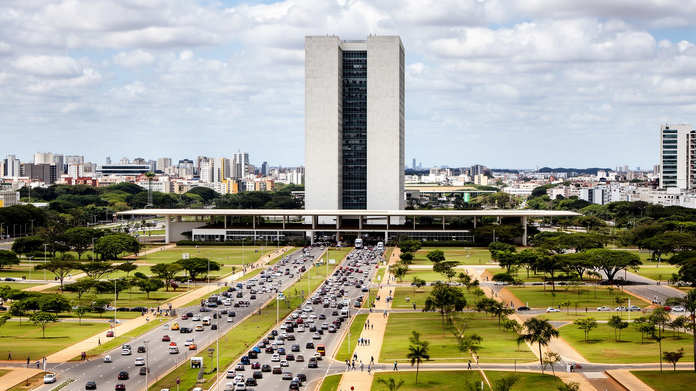
ブラジリアの経済は、連邦行政を中心にして厚いサービス部門を持つ。官庁、議会、司法、規制機関、大使館、法律事務所、コンサルティング、金融、教育、医療、建設、情報通信、警備、清掃、飲食、ホテルが互いに結びついている。公務員や専門職の所得水準は高く、国内でも一人当たりの生産額が大きい地域である。しかし平均値は都市の実感を隠す。中心部の安定した給与と、周縁から通う清掃員、警備員、建設労働者、配達員、家事労働者、非正規販売員の生活は同じではない。行政都市であるため景気の変動に比較的強い面がある一方、民間産業の多様さや若者の雇用機会、起業の広がりには課題もある。公共支出に近い仕事ほど安定し、周縁の小商いほど運賃、家賃、信用、治安、物価の影響を強く受ける。建設業は都市拡大と再開発を支えるが、労働安全、通勤、住まいの問題も抱える。ブラジリアの豊かさを読むには、GDPや公務員給与だけでなく、その所得がどこで消費され、誰がサービスを提供し、どの地域に税収や公共施設が戻るのかを見る必要がある。首都の経済は、制度の近くにある高収入の仕事と、その制度を毎日動かす見えにくい労働の組み合わせでできている。都市の成熟は、平均所得の高さより、働く人が通勤と家賃に押しつぶされず暮らせるかで測られる。行政の安定がある都市だからこそ、民間の小さな仕事や若者の技能形成を軽く見ない視点が必要になる。
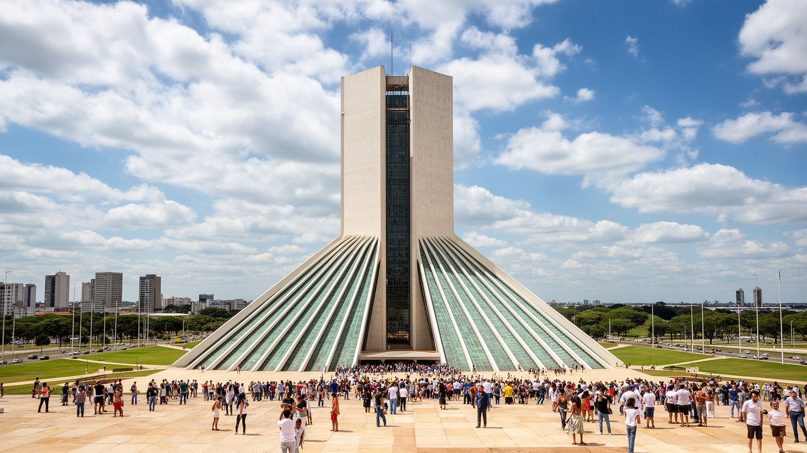
ブラジリアの宗教景観は、白い大聖堂だけでは説明できない。カトリックの記念碑的建築、福音派教会、心霊主義センター、アフロ系宗教、先住民文化への関心、仏教やイスラムなど移住者の信仰が、計画都市の広い空間と衛星都市の生活圏に重なる。新首都は近代的で合理的な国家像を掲げたが、人々はそこに祈り、儀礼、家族の節目、政治的な願い、癒やしを持ち込んだ。大聖堂の光の演出は観光客に強い印象を与える一方、周縁の小さな教会は育児、失業、暴力、依存症、病気、移住者の孤独を支える相談場所にもなる。宗教団体は選挙や政策にも影響し、保守的な価値観、社会支援、音楽、若者の居場所を通じて公共空間に参加する。広い芝生や軸線は国家のための空間として設計されたが、実際には礼拝、抗議、巡礼、家族写真、屋外イベント、追悼の場として使われる。ブラジリアを信仰から読むには、建築美と政治的象徴だけでなく、衛星都市の日曜礼拝、宗教行列、バスで通う信者、寄付、福祉活動、宗教間の緊張を見る必要がある。近代都市の空白は、人が意味を置くことで初めて生活の場所になる。祈りは首都の硬い制度を、住民の不安や希望へ結び直している。政治家の言葉、家族の祈願、地域の支援が同じ宗教空間で交わるため、信仰は私的なものに留まらず、首都の公共性を形作る力にもなる。
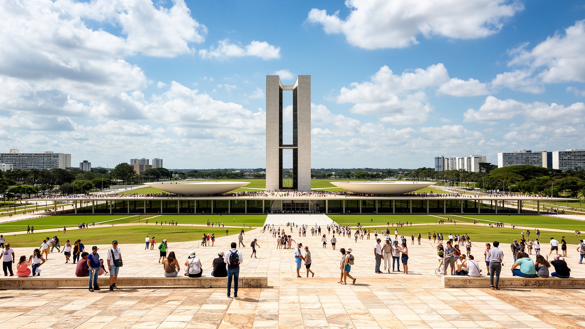
ブラジリア観光は、古い植民地都市の石畳を歩く体験とは大きく違う。旅行者は三権広場、国会議事堂、大聖堂、イタマラチ宮、ジュセリーノ・クビチェック記念館、テレビ塔、国立博物館、パラノア湖、ドン・ボスコ聖堂を巡り、近代国家が自分をどう見せようとしたかを読む。世界遺産としての価値は、建築単体ではなく、都市計画、軸線、空の大きさ、記念碑の配置にある。しかし観光しやすい都市かというと、徒歩の距離は長く、日差しは強く、公共交通だけで効率よく回るには工夫がいる。車窓から見ると壮大な空間も、歩くと広すぎる空白になる。観光の課題は、建築を写真で消費するだけでなく、その計画がどのような社会を想定し、どの生活を外に置いたのかを説明することである。衛星都市、市場、湖畔の公共空間、夜の食堂、教会、バスターミナルを組み合わせると、ブラジリアは記念碑の都市から生活都市へ変わって見える。世界遺産保全は景観を守る重要な仕事だが、過度に固定すれば住民の必要な更新を妨げることもある。観光は都市計画の実験を学ぶ入口であり、同時に理想と現実の距離を観察する機会である。美しい曲線の背後に、通勤と水と住宅の物語を重ねることで、ブラジリアの旅は深くなる。ガイドの説明、移動手段、暑さへの備え、周縁地区への視線が加わると、観光は建築鑑賞から都市理解へ変わる。
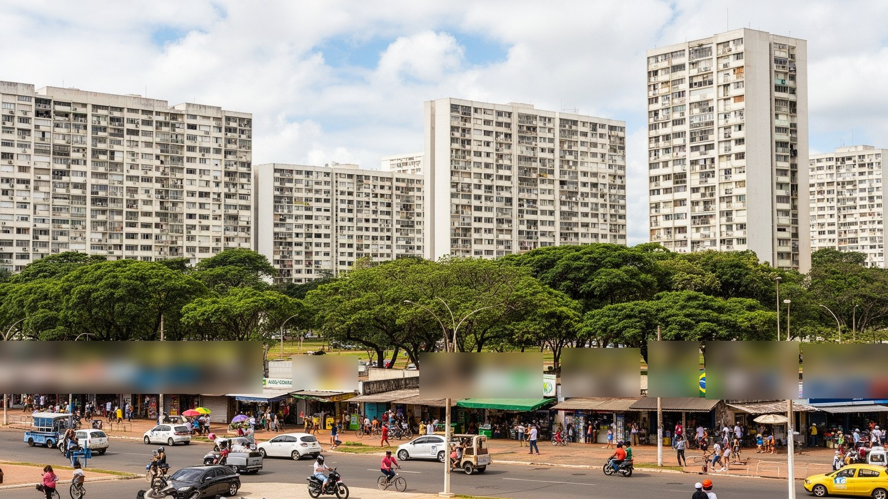
ブラジリアの暮らしは、広い空、低い湿度、車道のスケール、緑地、集合住宅、衛星都市の商店街が作る独特のリズムを持つ。プラーノ・ピロトのスーパーブロックでは、住棟、学校、商店、緑地が計画的に配置され、歩行者のための余白も用意された。しかし家賃や住宅価格は中心部で高く、多くの家族は周縁の行政地域や周辺自治体に住む。日常の差は、住所、車の有無、職場までの距離、子どもの学校、病院、治安、買い物の選択肢に現れる。中心部のスーパーやレストランを支える人が、早朝のバスで遠くから来ることは珍しくない。乾季には空気の乾燥が体調に影響し、雨季には道路の冠水や渋滞が増える。車を前提にした都市構造は、免許や自家用車を持たない人、高齢者、子ども、低所得者に不便を押し付けやすい。一方、衛星都市には市場、屋台、音楽、教会、家族の店、公共学校、ローカルな祭りがあり、中心部にはない親密な日常も育っている。ブラジリアを生活都市として読むには、計画された住宅ブロックの理念と、計画からこぼれた住宅地の工夫を同時に見る必要がある。都市の豊かさは、軸線の美しさだけではなく、バスを待つ日陰、近くの診療所、手頃な家賃、子どもが歩ける道の有無で決まる。生活の質を上げるには、大きな記念碑よりも、歩道の影、診療所の待ち時間、夜の帰宅路、学校までの距離を改善する積み重ねが効いてくる。
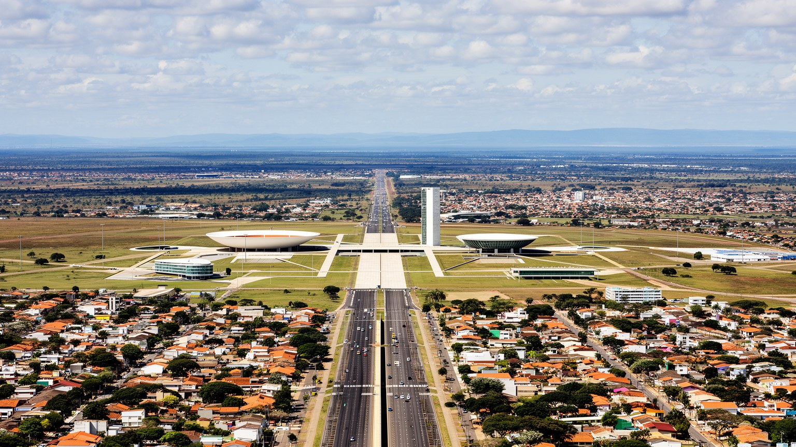
ブラジリアを理解するには、未来都市、官僚都市、建築都市という一枚の印象をほどく必要がある。確かにこの都市は、首都移転、国家統合、モダニズム、三権分立、世界遺産を非常に明瞭な形で見せる。だが、その明瞭さの外側には、建設労働者の歴史、衛星都市の拡大、長距離通勤、所得格差、水管理、乾季の空気、宗教の支援、車依存、公共空間の使いにくさがある。広い軸線は国家の秩序を表すが、そこを掃除し、警備し、食事を作り、書類を運び、バスで帰る人の生活を見なければ、都市の半分しか読めない。ブラジリアは、計画が都市をどこまで作れるのか、そして計画から外れた生活が都市をどう補うのかを示す実験場である。政治の中心であるため、全国の対立と希望が広場へ集まる。建築の中心であるため、保存と更新の緊張が続く。内陸高原の都市であるため、水とセラードの限界も見える。ブラジリアの重要性は、完璧な計画都市であることではなく、理想と現実の距離が非常に見えやすいことにある。三権広場から衛星都市の市場までを一つの地図として読む時、ブラジリアは単なる首都ではなく、ブラジルという国が統治、開発、格差、未来像をどう抱えているかを示す都市として立ち上がる。壮大な計画と小さな日常を重ねて見るほど、この首都は記念碑ではなく、調整を続ける生活の場として理解できる。